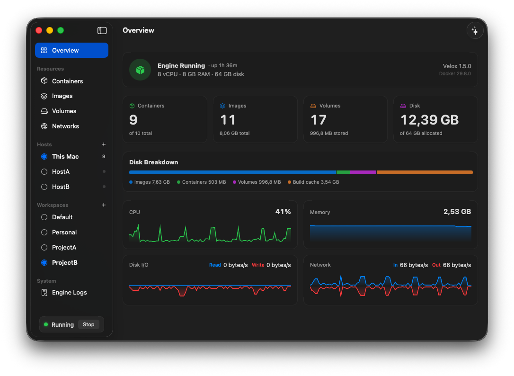
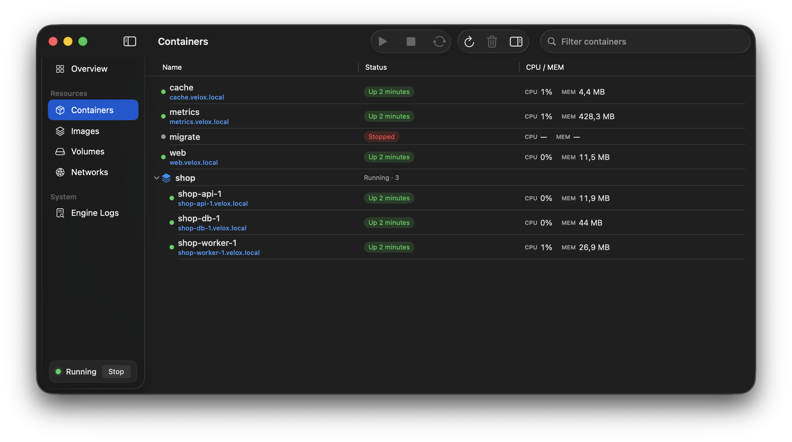

Stock Docker CLI
Velox registers a Docker context named velox, so
Compose, Buildx, Testcontainers, SDKs, and existing scripts can
talk to the real Docker API.
Open source · Docker Desktop alternative for Apple Silicon
A fast, lean way to run a real Docker Engine on macOS with the stock Docker CLI, a native Swift host, and a self-contained app that gets out of your way.

Native where it matters
Velox registers a Docker context named velox, so
Compose, Buildx, Testcontainers, SDKs, and existing scripts can
talk to the real Docker API.
Inspect compose groups, containers, images, volumes, networks, logs, resources, and disk usage from a SwiftUI app and menu-bar quick panel.
Reach containers from macOS at <name>.velox.local
with their real IPs, any protocol, and no published port required.
One Swift host process manages the VM, Docker API proxy, port forwarding, DNS, resource saver, and app UI without Electron or always-on background daemons.
Park a whole project — containers, images, volumes and networks — and switch to a clean or cloned one in seconds, then switch back with everything as you left it. Duplicating a workspace is instant and takes no extra disk.
Use Docker as Docker
Keep the Docker tooling you already use and point it at the Velox context. The app can stay open for a full desktop experience, or the CLI can run the engine headless.
# install, then point the stock CLI at Velox
curl -fsSL https://raw.githubusercontent.com/mikaelhug/Velox/main/install.sh | bash
docker context use velox
docker run --rm hello-world
# reach a container by name — no -p needed
docker run -d --name web nginx
curl http://web.velox.local
# park a project and switch to a clean one
velox workspace new client-a
velox workspace use client-a
Measured against Docker Desktop
Measured against Docker Desktop 4.88.0 on one Mac, on one day, with both engines running the identical Docker Engine 29.7.2 at matched CPU and memory. Full methodology, every raw value, and the places Docker Desktop wins are on the benchmark page.
How it is built
The host is Swift on Apple's Virtualization.framework.
Networking uses Apple's in-kernel VZNAT datapath.
The guest uses a kernel.org kernel, a static Rust init process, a
read-only erofs root filesystem, and stock dockerd.
The data disk is durable by default, with guest barriers and a raw sparse image that can return freed space to macOS.
Try Velox
Velox requires macOS 15 or newer on Apple Silicon. The app is signed but not yet notarized, so manual installs need the quarantine step shown in the README.